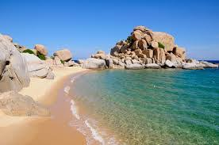

HELLO, IT'S NICE TO MEET YOU

Ninh Thuận là vùng đất cuối của dãy Trường Sơn với nhiều dãy núi đâm ra biển Đông, có địa hình thấp dần từ Tây Bắc xuống Đông Nam.
Lãnh thổ tỉnh được bao bọc bởi 3 mặt núi với 3 dạng địa hình gồm núi, đồi gò bán sơn địa và đồng ven biển.
Ninh Thuận là vùng đất nổi tiếng về các di tích văn hoá Chămpa và các tiềm năng kinh tế phong phú khác
. Ngư trường Ninh Thuận là một trong bốn ngư trường lớn của cả nước có nhiều loại hải sản quý và sản xuất được quanh năm.
Bờ biển dài có nhiều bãi tắm đẹp thuận lợi cho phát triển du lịch, vừa thuận lợi để phát triển sản xuất muối công nghiệp quy mô lớn. Bên cạnh đó, khoáng sản ở Ninh Thuận cũng khá phong phú và đa dạng,
trong đó phải kể đến một số loại có trữ lượng cao, chất lượng tốt thuận lợi cho khai thác công nghiệp như đá granít, cát silíc, nước khoáng..
Ninh Thuận có rất nhiều cái khác, đặc sản là một trong số đó. Nếu như bạn muốn hiểu vì sao thì đặc sản Phan Rang – Ninh Thuận nghe qua là thèm dưới đây sẽ là lời giải thích.
Ẩm thực Ninh Thuận chính là sự giao thoa, kết hợp hài hoà của ẩm thực miền Trung và văn hoá ẩm thực Chăm. Dung dị, mộc mạc như chính con người ở vùng đất này, các món ăn hay đặc sản của Ninh Thuận thường không quá cầu kì về mặt hình thức hay trang trí mà chủ yếu coi trọng “hương vị” và sự “tươi ngon”.
Chỉ cần một lần đặt chân đến mảnh đất Ninh Thuận, mọi du khách đều sẽ bị mê hoặc bởi thiên nhiên núi rừng hùng vĩ, con người thân thiện và nhiều món ăn hấp dẫn.
Và điều mà nhiều du khách cảm thấy tò mò nhất chắc hẳn là đặc sản Ninh Thuận phải không nào? Vậy vùng đất này có những món ăn nào có thể khiến du khách hấp dẫn đến như vậy!
Hãy để VN Foods giúp bạn hiểu hơn về văn hoá ẩm thực nơi đây nhé!